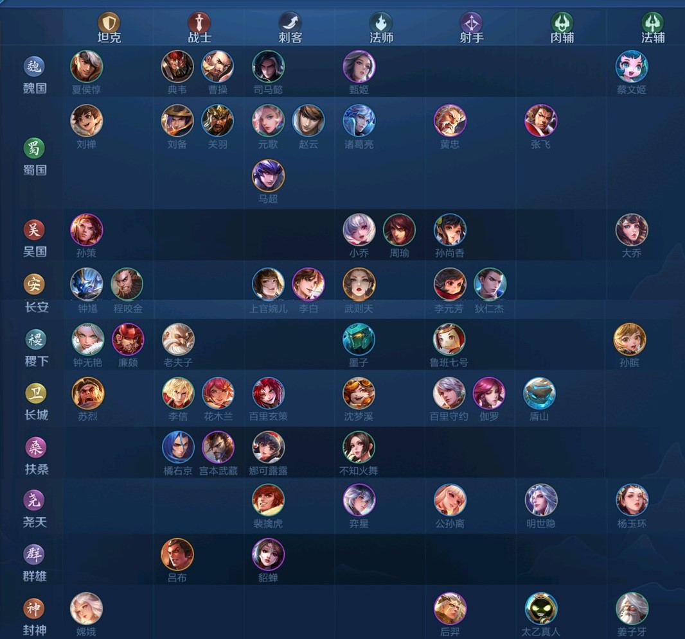
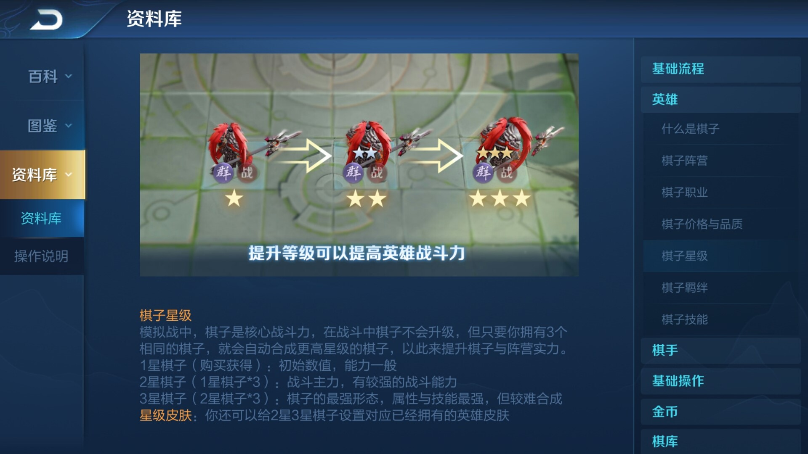
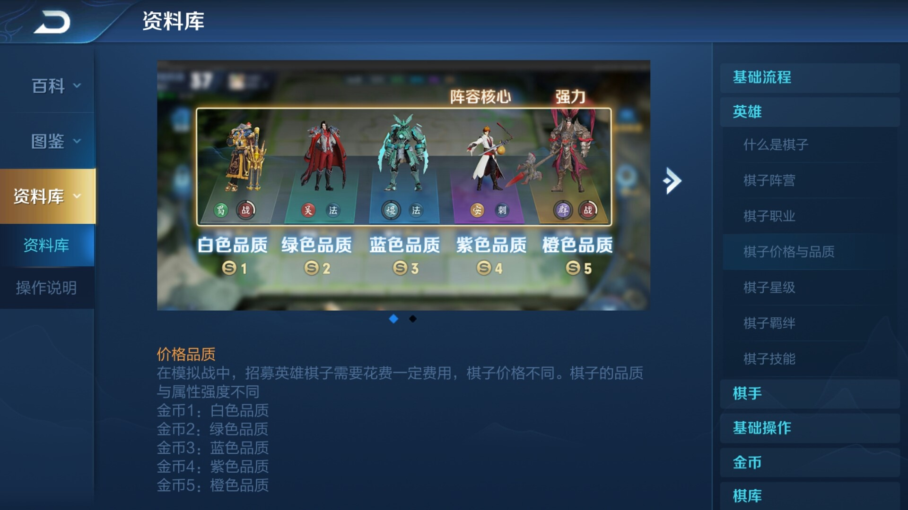
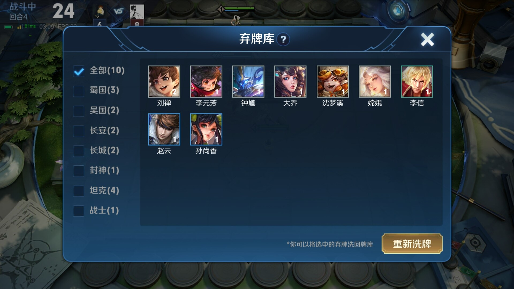
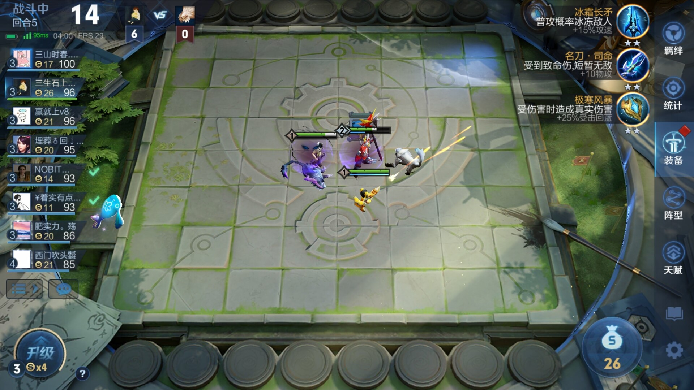
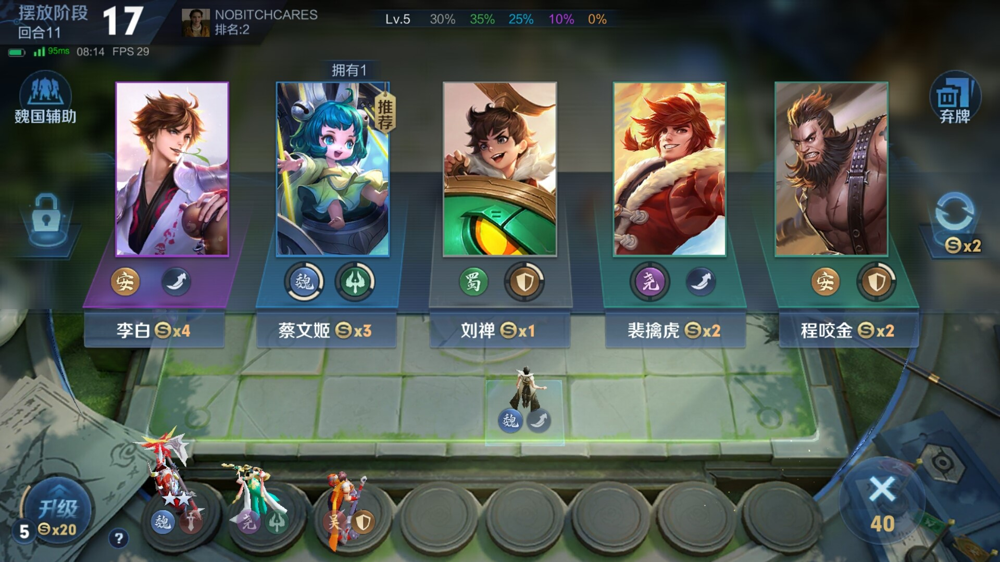
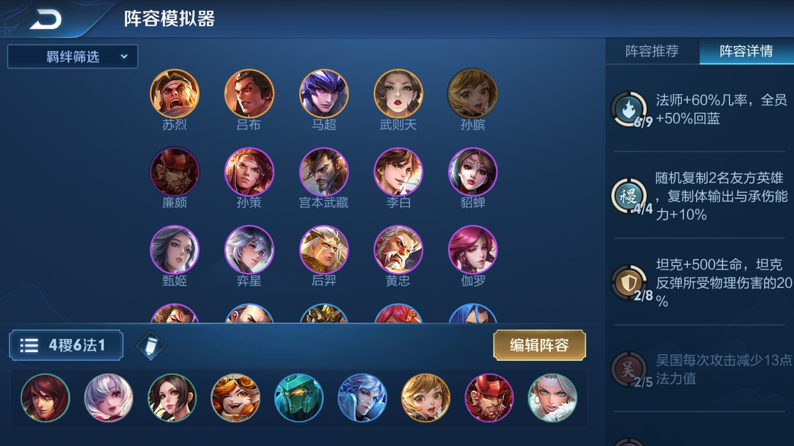
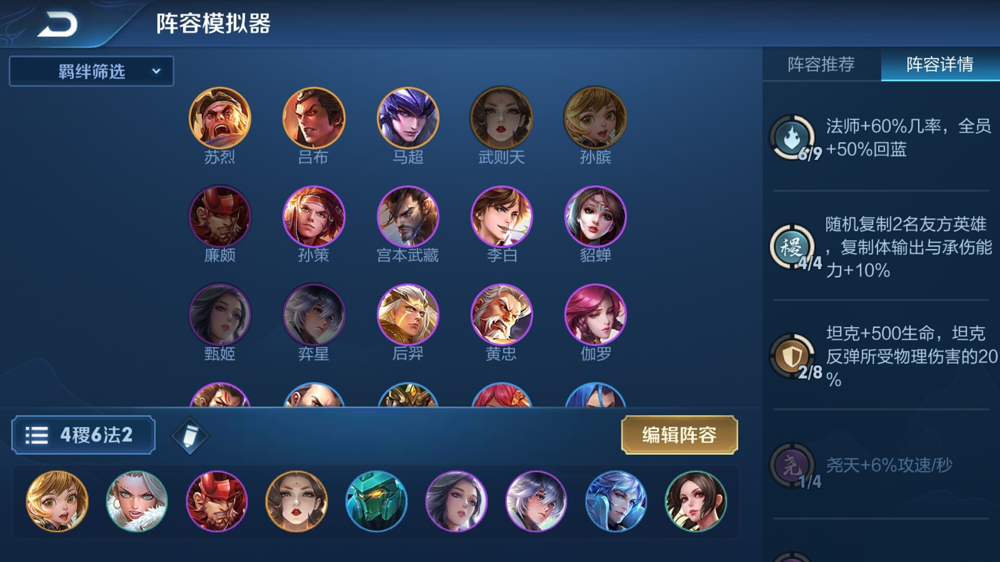
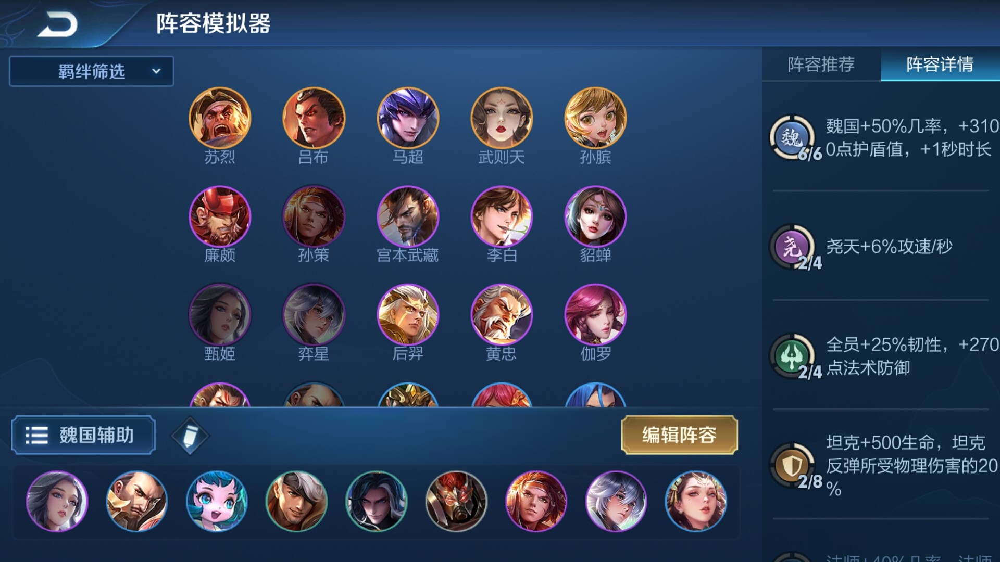

王者荣耀新手小课堂（番外篇）—— 王者模拟战
王者荣耀 王者模拟战
新手
背景介绍
王者模拟战，这一类游戏统称“自走棋”，最早可以追溯到DOTA的自走棋，当时，DOTA以自身游戏中的角色、阵营、属性等开创了自走棋模式，风靡一时。过了不久，很多游戏看到了自走棋的魅力也开始以自己的游戏为本体，模仿推出了各种各样的自走棋玩法，其中，英雄联盟以其庞大的游戏群体和非常高的知名度，其自走棋——云顶之弈——成为最为玩家最多的自走棋玩法，很快超越了DOTA自走棋。后来，腾讯开始将自走棋玩法搬到手游王者荣耀中，也就是现在的王者模拟战。上个赛季，即S0赛季作为公测赛季，以其不可比拟的便捷性获得了大量玩家的青睐。————好，废话结束，下面开始正题。
干货介绍
1.王者模拟战中所有英雄及其所属的阵营（行）和职业（列），每个英雄都有一个阵营和一个职业，例如诸葛亮，属于蜀国阵营，法师职业。

2.王者模拟战英雄星级，分为1/2/3三个等级，等级越高英雄的属性越高，三个同等级的英雄可以自动升级为高一个等级的英雄，即三个1星升二星，三个二星升三星，升到三星共需要9个一星英雄。
3.王者模拟战英雄品质，分为白/绿/蓝/紫/橙五种品质，对应的一星英雄购买分别需要1/2/3/4/5金币，所有英雄数量一定，品质越高的英雄数量越少，也越难以到达三星，但并不意味着品质越高英雄越强（比如紫色貂蝉我就觉得有点捞啊，还不如蓝色的上官婉儿我感jio），根据阵容搭配选择合理的英雄才是最重要的。
4.弃牌库：每当你的选牌界面手动或自动刷新时，都会将该页面中的没有被购买的所有牌放到弃牌库中，对应英雄的总数量减少；当你出售已拥有的英雄时，也会有同样的情况。这种时候，王者模拟战有一个“弃牌库”，在选牌界面的右上方，里面是你已弃掉的牌，如果你有较多的需要的牌处于弃牌库中时，可以根据羁绊进行筛选，并将其放回牌堆中，每五回合（如果我没记错的话）可以操作一次，根据羁绊需求进行筛选可以防止不需要的牌也被放回牌堆中从而导致抽到需要的牌的概率进一步降低。
5.装备和天赋：每到5的倍数的回合时，会和野怪进行搏斗（这个词有点怪怪的），随机掉落1-3个数量不等的装备，与王者荣耀中的装备属性基本相同，根据自己的阵容特点/输出点选择合适的装备，每个英雄最多装备三个装备，可以在准备环节拆卸/更换；王者模拟战中右下角是升级按钮，一般情况下，每过一回合升级所需经验会-2，点击该按钮可以消耗对应数量的金币进行升级，每次升级会有三个天赋待选（有个天赋可以将后续每次升级可选天赋变为四个），根据自己的阵容需求进行选择。
下面正题开始：
重点（敲黑板）
特别须知：以下内容主要适用于非快速模式
由于王者模拟战中，羁绊（阵营+职业）较多，新手直接入坑可能会比较迷茫，这里对迷茫的新人做一个引导：1.最重要的羁绊方面，推荐开局直接点击选牌界面左侧的阵容选择，选择一个确定的阵容，之后只拿该阵容的英雄，即选牌界面上写有“推荐”二字的牌，如果熟练一点可以拿一些其他的英雄凑羁绊度过前期。

当后面准备区爆满时，进行一个取舍，即将三星的>非即将三星的，高品质的>低品质的，羁绊急需的>羁绊不急需的，同时，停止刷新，最好点击左侧的锁锁住（高品质/多个需要的牌在该界面时），然后攒钱升级。4稷下6法师（1）
特点在于英雄都是低费英雄，很容易到三星，而且比较省钱，只不过容易发生等待区爆满的情况
玩法思路：保持双稷下（最好是钟无艳和墨子），然后再凑法师，凑到6法师再把另外两个稷下补上
阵容思路：墨子、钟无艳、廉颇站前排，孙膑和输出高的法师站中间，其余的可以当工具人站两边吸引仇恨，不知火舞站到同一行的空旷位置
（ps：如果遇见“人数最多的羁绊 等级 +1”的羁绊必选，A级）

4稷下6法师（2）
特点在于英雄品质有差异，不至于像（1）那样极易爆满，但相应的花费要升高
玩法思路：和（1）同理，但注意由于武则天是5费牌，很难拿到，所以在武则天之前可以先拿个周瑜/沈梦溪/小乔凑羁绊，2星即可，等待武则天降临，然后反手把这个工具人一卖，闷声发大财
阵容思路：墨子、钟无艳、廉颇、弈星（如果想让弈星多放几次技能可以放后面边上）站前排，其余同理
（ps：如果遇见“人数最多的羁绊 等级 +1”的羁绊必选，A级）

魏国辅助流
特点在于，肉的一比的同时伤害还高，控制多的很的同时回血还很强，核心输出点在司马懿上，一定要三星
玩法思路：双辅助羁绊>（高等级）魏国羁绊，弈星和孙策优先上星级高的
阵容思路：曹操、夏侯惇、典韦、孙策、弈星（弈星同上）站前排，司马懿最后排，甄姬中间，蔡文姬和杨玉环贴其左右

2.金币机制：每回合结束获得的金币分为几个部分，固定收益、利息收益、天赋收益（如果我没记错的话），天赋收益指的是有个天赋是连胜获得金币+1，固定收益是固定的，这个好理解，最后这个利息收益，利息是每回合战斗结束后会根据你现有的金币进行结算，<10利息为0金币，>=10&<20利息为1金币，>=20&<30利息为2金币，>=30为3金币，所以建议<30时节约使用金币，尽量不要刷英雄，尽量只购买“推荐”英雄，优先级攒钱到整十数>购买所需英雄（3费及以上可以锁一手），过了30之后，每回合就可以安心地刷英雄了，想升级可以少刷点，不升级可以多刷点，保证最后金币>30即可。
濒死时，可以疯狂刷了（不然就带进坟墓里了），来得及可以刷完，来不及的话，战斗一开始就可以停手了。
补充内容：
1.待补充